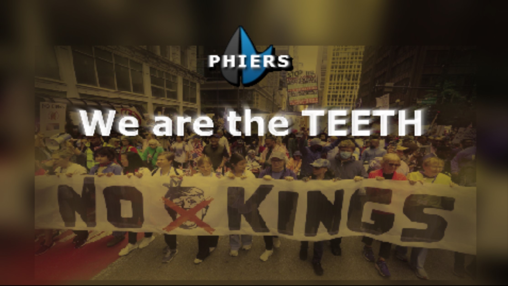

MABAH — Sounds like MAGA. But a lot bettah.
PHIERS.org coordinates millions of citizens into a force Congress cannot ignore — starting with a $600 healthcare solution they refuse to authorize.
Built for this moment. Validated along the way.
15 years in the making — because the problem never went away.
The Crisis
The problems aren't complicated. The solutions often exist. Congress just won't act.
The No Kings Rally will be the largest protest in American history.
But energy without mechanism is frustration that fades.

Protests create visibility. PHIERS.org creates leverage. The movement needs both.
PHIERS.org is the mechanism the No Kings movement has been missing.
→ Are you a movement organizer? See how PHIERS.org gives your demands teeth.This isn't a policy failure. It's a leverage failure.
PHIERS-power gives us the leverage to fix it.
The Missing Piece
Elected officials don't respond to noise. They respond to numbers.
Millions of people are angry — but acting alone, fragmented, and diffuse.
PHIERS.org changes that — by getting people to focus on the common good instead of the issues that divide us.
The Proof
If the math is this obvious, why hasn't Congress acted?
Because they don't have to. Yet.
How We Force Action
Add your name to the online petition now. 30 seconds. When millions sign the same demand, Congress can no longer pretend the public isn't watching.
12 million Americans. The 3.5% that history shows governments cannot ignore.
At 1,500 signatures in a district — or 3.5% nationally — elected officials are summoned to town halls in their own districts. We present the survey results from their own constituents. What is the survey? →
They commit publicly. On the record. Or they face what comes next.
Act — or be removed. Through primaries, special elections, and organized constituent opposition — before November 2026. How does replacement work? →
As new threats arise, we update the survey. Permanent accountability. Permanently responsive government. For, by, and accountable to We the People — only.
This is also how we overcome voter suppression, election manipulation, and authoritarian tactics — peacefully and constitutionally. When the only people elected are those who publicly commit to their constituents, corruption loses its grip.
It's not complicated.
It's just never been organized at scale.
Until now.
What Happens Next · The Roadmap
First priorities:
End the unauthorized wars draining over $1 billion a day — no vote, no mandate, no end in sight.
Authorize telehealth on the ACA Exchange and extend it to all Medicare and Medicaid beneficiaries — delivering care, creating jobs, and building and restoring the public hospitals, clinics, nursing homes, grocery stores, and transportation that communities need most: in rural areas, urban centers, and everywhere in between.
Then — once leverage exists — Congress must respond to the full range of public demands:
Not because politicians suddenly grow a conscience.
Because they have no choice.
Three deadlines. One mission. No turning back.
District by district.
Survey results delivered.
Public commitment demanded.
No exceptions.
Who We Are
Not an outsider demanding change.
An insider who refused to stop when the system pushed back.
PHIERS.org has been building this solution since 2009. Not because the moment was right. Because the problem was real — and nobody else was solving it.
Every time the system pushed back — through attacks, sabotage, and deliberate obstruction — PHIERS.org didn't retreat. We learned what we needed to survive. Then we pivoted to solve the next emerging problem.
Fifteen years of pivots didn't weaken PHIERS.org. They built it into something that can address five dimensions of the affordability crisis simultaneously — with zero wasted motion. That's the 5D solution. Not designed in a think tank. Forged under pressure. In the real world. Over 15 years.
Not built for profit. Not built for power.
Built for We the People — by people who refused to stop.
"If you weren't legit, we wouldn't risk putting our name behind yours."
"Major outlets are interested — Forbes, USA Today, International Business Times."— Pathos Communications, London Stock Exchange
Our goal: a Congress that is for, by, and accountable to We the People — only.
Your signature isn't just a petition. It tells your representative exactly what you expect. It demands they vote accordingly. When we reach 12 million, every member of Congress will know what We the People require.
The No Kings Rally showed our power.
PHIERS.org makes it permanent.
PHIERS.org gives it teeth.